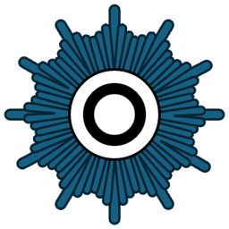

Zugang nur für befugte Ermittlerinnen und Ermittler.
Den braucht ihr erst später. Im Laufe des Spiels bekommt ihr Codes genannt, mit denen ihr an eine bereits erreichte Stelle zurückspringen könnt – zum Beispiel, wenn das Handy neu startet. Zum Start meldet ihr euch einfach oben an.
